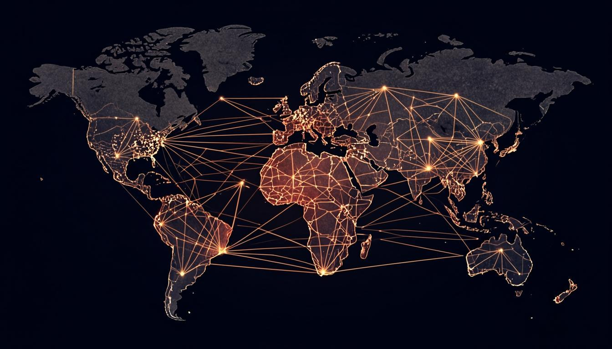

This manifesto is organised in ten parts. Parts I–III establish the thesis, the problem, and the model. Parts IV–VI are written for specific audiences — students, investors, and partners — though every part is relevant to every reader. Parts VII–IX detail the architecture, the plan, and the ethos. Part X opens the blueprint. Read sequentially, or enter through the audience part most relevant to you.
The world has universities that are global, universities that are need-blind, universities that are interdisciplinary, and universities that are financially independent. It does not have a university that is all four. Artemis is the proposition that the four can be combined — and that, once combined, they produce an institution fundamentally different from any that exists.
Consider each property in isolation. New York University operates campuses in Abu Dhabi, Shanghai, and Accra — it is global. Harvard admits US students need-blind — it is need-blind. Olin College abolished academic departments and teaches engineering through interdisciplinary projects — it is interdisciplinary. And the University of Texas system, with its $40 billion endowment, covers its operating costs from endowment payout and tuition — it is financially independent. Each property is proven. Each exists. But no institution combines all four, because each property, taken seriously, imposes structural constraints that conflict with the others. A need-blind university that is also global must subsidise students across dozens of tax and currency regimes. An interdisciplinary university that is also financially independent must fund research without the disciplinary grant infrastructure that siloed departments provide. The combination is hard. That is why it does not exist.
Artemis is designed to make the combination work. The financial model — $3,000 annual tuition, set at a level accessible to 90% of qualified students worldwide, with the remainder covered by a scholarship fund capitalised from operating surplus — resolves the need-blind-plus-global tension by setting tuition low enough that need-blind is affordable at planetary scale. The research model — 19 interdisciplinary Centers of Inquiry with long-term renewable appointments, funded from the operating budget rather than external grants — resolves the interdisciplinary-plus-independent tension by removing the grant cycle that forces faculty into disciplinary silos. The physical model — 50 repurposed colleges across 35 countries, each a self-contained unit of 1,000–2,500 students — resolves the global-plus-affordable tension by acquiring existing buildings rather than building new campuses. Each design decision is a response to a specific structural conflict.
The proposition is not that Artemis will be a better university than Harvard or Oxford. The proposition is that it will be a different kind of institution — one that operates on a different logic, serves a different population, produces a different kind of graduate, and, crucially, can be replicated by anyone who reads this document. The legacy university is a cathedral: magnificent, durable, impossible to copy. Artemis is designed to be a blueprint: complete, publishable, replicable. The goal is not one Artemis. The goal is a world in which an Artemis-type institution is an option available to any community that wants one. This manifesto is the argument for the first Artemis and the operating manual for the rest.

Three conditions have converged in the 2020s that make a planetary, need-blind, self-sustaining university possible for the first time in history. None of them existed in 2000. Two of them did not exist in 2010. The window is open, and it will not stay open indefinitely.
The first condition is the maturity of synchronous global communication. A university with 50 colleges on six continents requires that a student in Nairobi and a student in Berlin participate in the same seminar, in real time, with shared materials. This was technically impossible before high-bandwidth video conferencing, cloud collaboration tools, and low-latency global networks — all of which reached production quality only in the 2010s. The pandemic forced their adoption at scale; the post-pandemic infrastructure makes a synchronous global campus operationally routine. The Artemis model could not have been built in 2005. It can be built now.
The second condition is the cost collapse of the physical substrate. The model depends on acquiring and converting 50 existing buildings across 35 countries — repurposed convents, warehouses, offices, factories. This strategy is viable because the post-pandemic shift to remote work has emptied commercial real estate globally, driving down acquisition costs. A building in a major city that cost $50M in 2019 can be acquired for $20M in 2025. The $100M founding campaign, which would have been insufficient in an earlier era, is now sufficient precisely because the physical substrate is cheaper than it has ever been.
The third condition is the legitimacy crisis of the legacy university. Tuition in the United States has risen 169% since 1980, far outstripping wages. Student debt exceeds $1.7 trillion. Public confidence in higher education has fallen from 57% to 36% in a decade. The institutions that served the 20th century are visibly failing the 21st. This creates the political and philanthropic space for a fundamentally different model: donors, faculty, and students are willing to take a risk on something new precisely because the existing options are so clearly inadequate. The window is not just technical and economic — it is cultural. People are ready to believe a re-engineering is possible because they can see that the current engineering has failed.
The window will close. Commercial real estate will re-price upward as economies adjust. The philanthropic appetite for risk will retreat as the memory of institutional failure fades. And the legacy universities, threatened, will adopt just enough of the Artemis model — a global campus here, a need-blind policy there — to blunt the case for something wholly new. The next decade is the period in which a clean-slate planetary university can be built. After that, the path is harder. This manifesto is written for the people who will build it now.
In 2008, an anonymous figure published a nine-page document that proposed a solution to a problem the financial establishment had declared unsolvable: how to create digital money without a trusted central authority. The Bitcoin whitepaper did not succeed because its cryptography was novel — the components were known. It succeeded because it combined them into a coherent, self-sustaining system and then published the blueprint for anyone to replicate.
The Artemis manifesto follows the same logic. The components — global campuses, need-blind admission, interdisciplinary research, endowment-based finance — are all known. None is novel in isolation. What is novel is the combination, and the proof that the combination is self-sustaining. Just as Bitcoin demonstrated that a decentralised currency could work without a central bank, Artemis is designed to demonstrate that a planetary, need-blind, self-sustaining university can work without ongoing philanthropy. And just as Bitcoin published its protocol so that anyone could run a node, Artemis will publish its blueprint so that anyone can found a sister institution.
The parallel has a deeper lesson. Bitcoin did not replace central banks. It created a new category of institution that coexists with the old. Similarly, Artemis will not replace Harvard or Oxford. It will create a new category — the replicable planetary university — that coexists with the legacy institutions and, over time, grows to serve the populations the legacy institutions cannot reach. The legacy university serves the top 1% of the global income distribution. Artemis is designed to serve the 90% for whom $3,000 annual tuition is accessible, and the 10% who need scholarship support. The two categories are not in competition. They serve different people, on different logic, at different scale.
There is also a cautionary parallel. Bitcoin took years to be taken seriously, and its adoption followed an S-curve: slow at first, then sudden. Artemis will likely follow the same pattern. The founding cohort of 120 students, the founding 200 faculty, and the founding donors are the early adopters — the people who see the model before it is proven. The 60,000 students of 2030 are the early majority. The replication by other founders in other regions is the late majority. This manifesto is written for the early adopters. If you are reading it, you are one of them. The question is whether enough of you act in time.

In the United States, the average annual cost of a private university education has risen from $3,000 in 1980 to $38,000 in 2024 — a 1,200% increase, against wage growth of 250% over the same period. The system has become unaffordable for the middle class it was designed to serve, and the debt used to bridge the gap now exceeds $1.7 trillion nationally.
The cost crisis is not an accident. It is the structural consequence of a model that ties academic prestige to expenditure. Universities compete for students and faculty by building nicer dormitories, fancier gyms, and larger administrations, and they fund the competition by raising tuition. The result is an arms race in which every institution must spend more to maintain its position, and the cost is passed to students. The Baumol effect — the tendency of labour-intensive industries to raise prices faster than inflation because they cannot easily improve productivity — compounds the problem: a lecture in 2024 is not meaningfully more productive than a lecture in 1980, but the professor's salary has risen with the broader economy.
The rest of the world has the same disease at different stages. UK tuition has tripled since 2010. Australian tuition is rising. Even in countries with nominally free public higher education (Germany, the Nordic states), the cost is paid through taxation, and the tax base is straining as populations age. The global median cost of a four-year degree, including living expenses, is now approximately $80,000 — a figure that excludes over 80% of the world's households from participation without debt or subsidy.
Artemis resolves the cost crisis structurally. Tuition is set at $3,000 per year — a figure accessible to 90% of qualified students worldwide, based on global income data. This is not a discount; it is the actual cost of delivering the education, made possible by the repurposed-building strategy (no debt service on construction), the distributed model (no central campus to maintain), and the faculty-appointment model (long-term renewable appointments without the overhead of a grant administration bureaucracy). The $3,000 is what a university costs when it is not competing on expenditure. The $38,000 is what a university costs when it is.
The implication is that the cost crisis is not inherent to higher education — it is inherent to the prestige-expenditure arms race. A university that refuses to compete on expenditure, that sets tuition at cost, and that funds its scholarship pool from operating surplus rather than from endowment income can deliver a world-class education at a fraction of the legacy price. Artemis is the proof. If it works, the cost ceiling for serious higher education falls from $38,000 to $3,000, and the accessibility of the institution expands by an order of magnitude.
Roughly 1.4 billion people worldwide are of university age (18–24). Of these, perhaps 220 million are enrolled in some form of higher education — an enrolment rate of 16%. The remaining 84%, concentrated in the Global South, are excluded not by lack of ability but by lack of access: no nearby institution, no affordable option, no admission pathway.
The access crisis is the cost crisis viewed from a global rather than a national lens. In the United States, the crisis is debt; in the Global South, the crisis is absence. Sub-Saharan Africa, with a population of 1.1 billion, has fewer university seats than the United Kingdom, with a population of 67 million. The continent produces roughly 100,000 STEM graduates per year against an estimated need of 3 million. The gap is not a shortage of talent — it is a shortage of institutions.
The legacy response to the access crisis is the scholarship programme. Wealthy universities in wealthy countries admit a small number of students from poor countries, fund their education, and declare the problem addressed. This model, however well-intentioned, cannot scale: the numbers are too small, the cost per student is too high (because the underlying institution is expensive), and the brain drain — the most talented leave and do not return — hollows out the countries that most need capacity. A scholarship to Harvard is a gift to the student and a loss to the community.
Artemis takes a different approach. Rather than moving students to expensive institutions, it places affordable institutions where the students are. The 50-college network includes 23 Tier C colleges in cities like Kigali, Dhaka, Kampala, and Karachi — each serving 1,000–2,500 local students at $3,000 tuition, with scholarship support for those who need it. The student stays in their community; the institution comes to them. The 13,300 scholarships funded annually from operating surplus by 2030 are not tickets out — they are seats in local colleges that produce graduates who stay, build, and teach. The access crisis is solved not by extracting talent but by building capacity where the talent already lives.

The geographic distribution of the colleges is a deliberate intervention. Tier A colleges in London, Tokyo, and New York serve the same populations that legacy universities serve. Tier C colleges in Kigali, Dhaka, and Kampala serve populations that no legacy university serves. The network is not a single institution with a global brand — it is a portfolio of local institutions sharing a single academic culture. The access crisis is solved by the portfolio, not by the brand.
The scientific enterprise — humanity's organised effort to produce reliable knowledge — is producing more papers, by more researchers, in more journals, than ever before. And yet, the rate of paradigm-shifting discovery has fallen by half since the 1990s. The knowledge institution is optimised for output, not for breakthrough.
The knowledge crisis has three causes. First, the grant cycle forces faculty into short, predictable, incremental projects that can be funded, rather than long, risky, paradigm-challenging projects that might fail. A scholar who proposes a five-year investigation with uncertain outcomes is less likely to be funded than a scholar who proposes a two-year investigation with guaranteed publication. The system selects against the kind of work that changes fields. Second, the disciplinary silo — the departmental structure that organises faculty into specialised groups — prevents the cross-pollination that produces breakthroughs. The most consequential discoveries of the last 50 years (CRISPR, mRNA vaccines, deep learning) occurred at the boundaries of disciplines, not within them. A university that silos its faculty silos its thinking. Third, the publish-or-perish incentive rewards volume over significance, and the subscription-journal model locks publicly funded research behind paywalls, preventing the open accumulation that lets others build on prior work.
Artemis addresses all three. The long-term renewable appointment — a multi-year contract with no grant dependency — frees faculty to pursue deep, risky, long-horizon inquiry. The Center of Inquiry structure replaces departments with interdisciplinary hubs organised around problems rather than disciplines: Synthetic Intelligence, Bio-Regenerative Arts, Cosmological Humanities, Urban Futures. And the 7-year release policy puts every research output into the public domain under a remix-permissive license, ensuring that the institution's intellectual capital accumulates for humanity rather than for the journal publishers.
The knowledge crisis is not solved by producing more papers. It is solved by producing different papers — longer, riskier, more interdisciplinary, and freely available. Artemis is designed to produce fewer papers than a legacy university of the same size, but a higher fraction of them will matter. The measure of research success is not publication count but impact: how many ideas changed a field, how many ventures spun out, how many problems were solved. The 19 Centers of Inquiry, staffed by 200 founding faculty growing to 2,000 by 2030, are the engine. The 7-year release policy is the exhaust. The combination is the cure.

Universities are among the oldest institutions humanity has built. The University of Bologna was founded in 1088; Oxford in 1096. They have outlived empires, religions, and nation-states. But durability has become rigidity: the governance structures that preserved these institutions through centuries now prevent them from adapting to a century that looks nothing like the ones that preceded it.
The governance crisis manifests in three ways. First, the tenure system, designed to protect academic freedom, now protects mediocrity: a tenured professor who stops producing cannot be removed, and the institution cannot reallocate the position to someone more productive. Second, the shared-governance model, in which faculty vote on every major decision, produces paralysis: a university that needs to launch a new program in six months takes three years because every committee must concur. Third, the board structure, dominated by donors and alumni with ties to the legacy model, prevents the institution from making decisions that threaten the legacy — even when the legacy is the problem.
Artemis resolves the governance crisis through a structure that is durable without being rigid. Faculty hold long-term renewable appointments (5–7 years, renewable based on review) rather than tenure — this protects intellectual freedom (an appointment can only be terminated for cause or non-renewal after due process) while allowing the institution to reallocate positions when research agendas shift. The University Senate, composed of elected faculty from every Center, sets academic policy, but operational decisions are delegated to the President and executive team, who can move at the speed the century requires. And the Board, with a majority of independent directors and a constitutional prohibition on any single individual controlling more than one-third of seats, is structurally incapable of being captured by the legacy.
The deepest governance innovation, however, is the time-boundedness of the plan. The strategic plan runs 2025–2030. Every target has a deadline. Every year is reported against. If the institution drifts, the drift is visible within twelve months, not over a generation. Legacy universities can drift for decades because the governance structure has no forcing function. Artemis has one: the annual report, the independent audit, and the public commitment to targets. Governance is not a brake on change; it is the mechanism that ensures change happens on schedule.

A planetary university is not a university with a global brand. It is a university whose operating assumption is that the planet is the unit — that knowledge, students, faculty, and problems flow across borders as a matter of design, not exception. Artemis is planetary by structure: 50 colleges, 35 countries, six continents, one synchronous academic calendar.
The planetary design begins with the network. Three Central Nodes — Venice, San Francisco, Singapore — anchor the institution geographically and governance-wise. Venice is the founding seat, where the founding document is archived and the Board convenes. San Francisco is the technology and innovation hub, proximate to the capital and talent of Silicon Valley. Singapore is the Asia-Pacific convening point, a neutral city at the intersection of East and South. Each Central Node hosts approximately 5,000 students and serves as the regional headquarters for the surrounding colleges.
Radiating from the Central Nodes are 47 colleges in three tiers. Eight Tier A colleges, each serving 2,500 students, occupy flagship positions in the world's major knowledge capitals: London, Tokyo, Berlin, Paris, Toronto, Sydney, Seoul, New York. Sixteen Tier B colleges, each serving 2,000 students, occupy major global cities across all six continents — Nairobi, Mumbai, São Paulo, Cairo, Istanbul, Buenos Aires, Jakarta, Mexico City, and more. Twenty-three Tier C colleges, each serving 1,100 students, occupy regional access cities — Kigali, Dhaka, Kampala, Karachi, Tashkent, Quito — ensuring the network reaches the emerging knowledge economies that legacy universities have ignored.
The planetary design is not merely geographic. The curriculum is synchronised: a student in the Nairobi college and a student in the Berlin college take the same course in the same week, with shared materials, shared assignments, and shared seminars conducted over the institution's synchronous learning platform. Faculty rotate: every faculty member teaches in at least two colleges over a five-year cycle, ensuring that the academic culture is genuinely shared rather than locally variant. And the research flows: every Center of Inquiry operates across multiple nodes, with investigators and fellows distributed geographically and collaborating through the institution's shared infrastructure.

The planetary design has a financial logic as well as an educational one. Tuition is set in US dollars but collected in local currency at purchasing-power-parity-adjusted rates, so that $3,000 represents a comparable economic burden in every country. Research income is diversified across the grant ecosystems of the US, UK, EU, and Asia, reducing dependence on any single funding regime. And the endowment, held primarily in Switzerland, is insulated from the political and currency risk that any single jurisdiction imposes. The planetary design is, among other things, a risk-management strategy: an institution spread across 35 countries cannot be destroyed by a policy change in any one of them.
Need-blind admission means that a student's ability to pay is not considered in the admission decision. A qualified student is accepted regardless of financial background, and the institution commits to meeting the demonstrated financial need of every admitted student. This is the gold standard of access — and fewer than ten universities in the world, all in the United States, all with multi-billion-dollar endowments, practice it.
The reason so few institutions are need-blind is that it is expensive. A need-blind university must fund, from its own resources, the gap between what an admitted student can pay and what the education costs. At a US university with $60,000 annual cost of attendance, the average need-based aid per student is approximately $40,000. With 6,000 undergraduates and 60% receiving aid, the annual financial aid budget exceeds $140 million. Only endowments above $10 billion generate enough payout to cover this, which is why the need-blind club is so small.
Artemis makes need-blind admission affordable by lowering the cost of attendance to $3,000 — a figure accessible to 90% of qualified students worldwide. The 10% who cannot pay receive full scholarships from the fund capitalised by operating surplus. With 60,000 students and 10% on full scholarship, the annual scholarship budget is approximately $18 million — a figure easily covered by the $262M annual surplus the model generates by 2030. Need-blind admission, at Artemis scale, costs less than 7% of the annual surplus. It is not a stretch goal; it is a structural feature.
The need-blind commitment is also a recruiting advantage. The most talented students in the world are disproportionately concentrated in the Global South, where $3,000 is a meaningful but achievable sum and where the scholarship pathway is a lifeline. A university that can credibly promise admission based on merit, not means, and that has colleges in the regions where these students live, will attract an applicant pool that legacy universities cannot reach. The founding cohort of 120 came from 34 countries; the 2030 target of 60,000 students from 80+ countries is not aspirational — it is the natural consequence of being the only need-blind planetary university in existence.

Every qualified applicant is evaluated on merit alone. Financial background is never considered in admission. Every admitted student who cannot pay receives a full scholarship from the operating surplus. This is not a policy — it is encoded in the institution's constitution and cannot be amended without a supermajority of the Board and the Senate.
The departmental structure — organising faculty into disciplinary silos like Chemistry, History, or Computer Science — is so universal that it appears natural. It is not. It is a 19th-century invention, designed to standardise curricula for the industrial-era university, and it has become the single largest obstacle to the kind of interdisciplinary inquiry that produces breakthroughs.
Artemis abolishes the department. In its place are 19 Centers of Inquiry — interdisciplinary hubs organised around problems rather than disciplines. The Center for Synthetic Intelligence brings together computer scientists, philosophers, neuroscientists, and ethicists to study human-AI symbiosis. The Center for Bio-Regenerative Arts brings together biologists, architects, materials scientists, and artists to develop self-healing building materials. The Center for Cosmological Humanities brings together astrophysicists, philosophers, and historians to process petabytes of telescope data and ask what it means. Each Center is a deliberate collision of fields, structured around a question that no single discipline can answer.
The interdisciplinary design extends to the curriculum. Students do not declare majors; they declare missions (see Chapter 13, Purpose Learning). A student whose mission is "to make clean water accessible across the Sahel" will take courses in hydrology, public health, governance, and engineering — not because they are satisfying distribution requirements, but because the mission requires all of them. Faculty are appointed to Centers, not departments, and their teaching load includes courses that cross traditional boundaries. The four-pillar curriculum (epistemology, computational thinking, global systems, creative expression) ensures that every graduate has a shared interdisciplinary foundation regardless of their mission.
The interdisciplinary design has a research payoff that is the central justification for the model. The most consequential discoveries of the last 50 years have come from boundaries: CRISPR (microbiology + genetics), mRNA vaccines (immunology + nanotechnology), deep learning (neuroscience + computer science + statistics). A university structured to make boundary-crossing the default rather than the exception will produce more of these discoveries per faculty member than a university structured to prevent it. The 19 Centers are not 19 departments renamed; they are 19 interdisciplinary teams, each with the critical mass to pursue a serious research agenda and the cross-boundary culture to make that agenda ambitious.
A self-sustaining university is one whose operating costs are covered by operating revenue, not by philanthropy. This is the property that distinguishes a permanent institution from a dependent one. Artemis is designed to be self-sustaining within twelve months of launch — the $100M founding campaign is the last capital raise, and from Year 2 onward the institution generates surplus rather than consuming it.
The financial model has five revenue streams. Tuition: 60,000 students paying $3,000 per year generates $180M. Endowment payout: a $600M endowment at 4.5% generates $27M. Research grants and contracts: $45M, drawn from the US, UK, EU, and Asian funding ecosystems. Innovation equity: 5% of every Forge venture's equity flows to the endowment, generating $18M annually as the portfolio matures. Continuing education and executive programs: $30M, drawn from professional education across the network. Total annual revenue at steady state: $300M.
Operating expenses are dominated by faculty compensation: 2,000 faculty at an average $100,000 fully-loaded cost generates $200M (67% of expenses). Facilities and operations across 50 colleges: $30M (10%). Scholarships for the 13,300 students who cannot pay: $40M (13%). Research and Centers: $20M (7%). Administration and governance: $10M (3%). Total annual expenses: $300M. The model breaks even on operations from Year 2 onward, and the growth in revenue (from tuition scaling and endowment compounding) outpaces the growth in expenses, producing an expanding surplus.
The surplus is not profit — it is mission fuel. By 2030, the annual surplus reaches $262M, allocated as follows: $60M to endowment growth (building the corpus that secures the institution forever), $40M to scholarships (funding 13,300 students per year), $80M to expansion (building new colleges as the network grows), $40M to research (expanding the Centers), and $42M to the innovation fund (capitalising new Forge ventures). Every dollar of surplus is allocated, audited, and published in the annual impact report. The surplus is the mechanism by which the institution becomes permanent and the mechanism by which it expands its impact.

The self-sustaining property is what makes the model replicable. A university that requires ongoing philanthropy to operate cannot be replicated by founders who do not have ongoing philanthropic access. A university that breaks even on operations can be replicated by anyone who can raise the one-time capital — and the one-time capital, $100M, is within reach of government budgets, foundation endowments, and high-net-worth donors across the world. Self-sustainability is not just a financial property; it is the property that makes the blueprint publishable. Without it, the manifesto is an interesting idea. With it, the manifesto is an operating manual.
The four properties — planetary, need-blind, interdisciplinary, self-sustaining — are not independent features that can be adopted selectively. They are a system. Each property enables the others, and removing any one breaks the combination. This is why no legacy university has achieved all four: the legacy model is optimised for one or two, and adopting the others would require abandoning the optimisations.
Consider the dependencies. The self-sustaining model requires the planetary scale — 60,000 students paying $3,000 is what generates the $180M tuition revenue that covers faculty compensation. A need-blind university with only 6,000 students (legacy scale) cannot be self-sustaining at $3,000 tuition because the numbers do not work. The planetary scale requires the need-blind commitment — without it, the network is just a chain of expensive colleges serving the global elite, and the access crisis remains unsolved. The interdisciplinary model requires the self-sustaining finance — without it, faculty must chase grants, and grants are disciplinary, which forces faculty back into silos. And the need-blind commitment requires the interdisciplinary model — without distinctive academic value, the institution cannot attract the talented students who justify the scholarship investment.
This is the integrated whole. The four properties form a cycle: planetary scale produces the revenue that funds need-blind admission; need-blind admission produces the applicant pool that justifies planetary scale; interdisciplinary research produces the academic distinction that attracts the students; and self-sustaining finance produces the independence that makes the interdisciplinary model possible. Break any link and the cycle collapses. This is why the combination has never been achieved — it requires building all four simultaneously, as a system, with a single coordinated design. Artemis is that design.
The implication for founders considering replication is that the model must be adopted wholesale, not piecemeal. A university that adopts the planetary scale but not the need-blind commitment becomes a chain of elite colleges. A university that adopts the need-blind commitment but not the self-sustaining finance becomes a charity dependent on perpetual fundraising. A university that adopts the interdisciplinary model but not the planetary scale becomes a small experimental college without the resources to fund serious research. The blueprint works as a whole or it does not work at all. This is the central design principle, and it is the reason the manifesto is long: a one-page summary cannot convey the integration, and a piecemeal adoption will fail.
The four properties — planetary, need-blind, interdisciplinary, self-sustaining — form a system. Each enables the others. Adopting any one without the others produces a different (and lesser) institution. The blueprint must be implemented as a whole.
At Artemis, you do not declare a major. You declare a mission — a real-world problem you commit to advancing over your four years. The mission, not a departmental curriculum, shapes your course selection, your capstone project, and the Center of Inquiry you affiliate with. This is Purpose Learning, and it is the academic innovation at the heart of the institution.
A mission is a statement of intent. "To make clean water accessible across the Sahel." "To design governance systems for autonomous AI." "To build regenerative housing for climate-displaced communities." The mission is ambitious, specific, and consequential — it names a problem you believe matters and commits you to working on it. You do not need to solve the problem in four years; you need to advance it, to leave it further along than you found it. The mission is the axis around which your education turns.
Your mission shapes your curriculum. Working with a faculty advisor, you design a four-year course plan that gives you the knowledge and skills your mission requires. A student whose mission is water access will take hydrology, public health, governance, development economics, and engineering — not because these are distribution requirements, but because the mission cannot be advanced without them. A student whose mission is AI governance will take computer science, philosophy, law, political theory, and ethics. The curriculum is not standardised; it is mission-driven, and no two students follow exactly the same path.
Your mission shapes your capstone. Every Artemis student completes a capstone project in their final year, and the capstone must advance the mission. This is not a thesis — it is a contribution. A water-access student might design and prototype a low-cost filtration system deployed in a Sahel community. An AI-governance student might draft and publish a model regulatory framework adopted by a national government. The capstone is evaluated not only on academic rigour but on impact: did it advance the mission? The dual criterion (epistemic contribution and civic impact) is the academic standard of the institution.
Your mission shapes your Center affiliation. Every student affiliates with a Center of Inquiry — the interdisciplinary hub whose research agenda most closely aligns with the mission. You attend Center seminars, participate in Center research projects as a junior fellow, and build relationships with the faculty and graduate students who share your commitment. The Center is your intellectual home within the larger institution, and the relationships you build there are the professional network you carry into your post-Artemis life.

The mission is not fixed. Many students arrive with a clear mission; many do not. The first year includes a Purpose Learning studio where undeclared students explore problems, meet faculty, and refine their commitment. Missions can be revised — a student who arrives committed to "AI governance" might, after two years of coursework, refine it to "algorithmic accountability in public-sector AI." The point is not to lock in a path at 18 but to commit to a direction and let the education serve it. Purpose Learning produces graduates who know what they are working toward and why — a property that standard majors, with their distribution requirements and elective menus, do not reliably produce.
Every Artemis graduate, regardless of mission, completes a four-pillar foundation in their first two years. The pillars are not distribution requirements — they are the shared intellectual substrate that makes the interdisciplinary model work. A graduate who has mastered the four pillars can think rigorously about any problem, in any field, alongside any colleague.
The first pillar is Epistemology — how we know what we know. The foundations of inquiry, evidence, reasoning, and the limits of certainty. Students study logic, the scientific method, statistical inference, the philosophy of science, and the history of how humans have distinguished knowledge from belief. The pillar is not a philosophy elective; it is the substrate of every discipline. A biologist who has not examined what counts as evidence cannot reason about contested findings. An engineer who has not considered the limits of models cannot know when their models fail. Epistemology is taught as the foundation of rigorous thought, not as a historical curiosity.
The second pillar is Computational Thinking — the algorithmic decomposition of problems across every field. Not just coding, but the mental discipline of breaking a problem into components, representing it formally, and designing a procedure to solve it. Students learn programming, data structures, algorithms, and complexity, but they also learn to apply computational thinking to literary analysis (parsing text as data), to constitutional design (specifying governance as procedure), and to epidemiology (modelling disease as computation). The pillar produces graduates who can think algorithmically about any problem, which is increasingly the only way to think rigorously about problems at scale.
The third pillar is Global Systems — climate, finance, migration, supply chains, governance. The interlocking systems that define the 21st century, studied as integrated wholes rather than siloed specialties. Students study the carbon cycle, the monetary system, migration patterns, and the structure of international governance, with explicit attention to how these systems interact. A graduate who understands only one system will mis-diagnose problems that span several. The pillar produces graduates who can reason about the planetary condition, which is the condition every serious problem now occupies.
The fourth pillar is Creative Expression — the studio, the workshop, the stage. The conviction that making is knowing, and that every graduate must be able to build, write, compose, and perform, not merely analyze. Students complete studio courses in a medium of their choice (writing, visual art, music, fabrication, performance), with the requirement that they produce and present original work. The pillar produces graduates who can give form to their ideas — who can write a compelling argument, build a working prototype, compose a persuasive narrative, and stand in front of an audience and deliver. This is not a luxury; it is the difference between an idea that changes minds and an idea that does not.
Epistemology — how we know what we know. Logic, evidence, inference, the limits of certainty.
Computational Thinking — algorithmic decomposition of problems across every field.
Global Systems — climate, finance, migration, governance. The interlocking systems of the planetary century.
Creative Expression — making as knowing. The studio, the workshop, the stage.
Artemis offers nine undergraduate degree programs, each designed to bridge the four-pillar foundation with the interdisciplinary research of the Centers of Inquiry. The catalogue is not a fixed list of courses frozen for a generation — it is a living document, revised annually by the University Senate as the Centers' research agendas evolve and as the world's problems shift. What follows is the catalogue as it stands at founding.
The nine undergraduate programs are: B.S. Computer Science (integrating deep software systems, data science, AI/ML, and computational theory with the epistemic foundations of intelligence); B.S. International Business (global finance, cross-cultural leadership, and the political economy of interconnected markets); B.S. Environmental Science (complex global ecosystems, climate systems, and biodiversity with fieldwork across six continents); B.A. Philosophy, Politics & Economics (the integrated study of governance, markets, and ethics — the classical tripos reimagined for a planetary century); B.S. Biotechnology (from gene editing to synthetic biology, with deep integration of bioethics and translational innovation); B.A. Architecture & Urban Design (adaptive, regenerative built environments, with studios in six rotating hostel cities); B.S. Data Science & Statistics (the mathematical, computational, and ethical foundations of inference at scale); B.A. Global History (world history as an integrated discipline — not Western civilization plus electives, but a genuinely planetary curriculum); and B.S. Cognitive Science (the mind — computational, biological, philosophical — studied as the central mystery of the century).
Each program is structured in three layers. The foundation layer (Year 1–2) is shared across all programs: the four-pillar curriculum, plus introductory courses in the program's core discipline. Every Artemis graduate, regardless of program, can reason epistemologically, computationally, systemically, and creatively. The foundation is the common language of the institution — the intellectual substrate that lets a computer scientist and a historian collaborate on the same project without translation.
The core layer (Year 2–3) is program-specific: the deep disciplinary content that a Computer Science student must know (algorithms, systems, machine learning, distributed computing) or that a Global History student must know (historiography, archival methods, comparative civilizational studies). The core is taught not by a department but by the Center of Inquiry most aligned with the program — Computer Science is taught by the Center for Synthetic Intelligence, Architecture by the Center for Urban Futures, Biotechnology by the Center for Biotech & Life Sciences. This means the core courses are continuously refreshed by the research happening in the Centers, not by a textbook that was current a decade ago.
The mission layer (Year 3–4) is where Purpose Learning and the catalogue intersect. In consultation with a faculty advisor, you select electives — from any program, any Center — that serve your mission. A Computer Science student whose mission is AI governance might take constitutional law (from PPE), democratic theory (from Global History), and algorithmic fairness (from Cognitive Science). The mission layer is not a free-for-all; it is a curated path, approved by the advisor, that ensures intellectual rigour while serving the mission. The result is a transcript that tells a coherent story: here is what this graduate knows, here is why, and here is what they are prepared to do with it.
| Program | Degree | Center Affiliation | Key Courses (samples) |
|---|---|---|---|
| Computer Science | B.S. | Synthetic Intelligence | Algorithms, ML, Distributed Systems, AI Ethics |
| International Business | B.S. | Fintech, DeFi & Economics | Global Finance, Market Design, Political Economy |
| Environmental Science | B.S. | Climate Systems | Earth Systems, Climate Modeling, Field Ecology |
| Philosophy, Politics & Economics | B.A. | Democratic Governance | Constitutional Design, Game Theory, Ethics |
| Biotechnology | B.S. | Biotech & Life Sciences | Genetics, Synthetic Biology, Bioethics |
| Architecture & Urban Design | B.A. | Urban Futures | Adaptive Design, Urban Ecology, Bio-Materials |
| Data Science & Statistics | B.S. | Synthetic Intelligence | Statistical Inference, Causal Methods, Data Ethics |
| Global History | B.A. | Arts, Humanities & Civilization | Historiography, Comparative Civ., Digital Humanities |
| Cognitive Science | B.S. | Cognitive Science & Consciousness | Neural Foundations, Computational Cognition, Phil. of Mind |
Graduate programs launch in 2028, integrated into the Centers of Inquiry rather than operating as separate professional schools. Master's and doctoral students work as junior fellows on the same research agendas as the undergraduates, blurring the boundary between learning and discovery. The catalogue at the graduate level is even more dynamic — it is essentially the research agenda of the Center, structured into a degree pathway. A PhD in Synthetic Intelligence is not a fixed set of courses plus a thesis; it is a five-year participation in the Center's inquiry, with milestones that demonstrate the student's growing capacity to define and pursue original questions.
The catalogue is published openly, updated each academic year, and available to any prospective student before they apply. You can see exactly what you will learn, who will teach it, and how it connects to the Center's research before you commit. This transparency is deliberate: an institution that asks students to trust it with four years and $12,000 owes them a clear view of what they will receive in return.
The legacy university teaches by lecture: an expert at the front of a room talks for fifty minutes, students take notes, and learning is measured by how well the notes reproduce the expert's content on an exam. This model has not changed in 800 years. Artemis replaces it with a pedagogy designed for the century we actually live in — active, collaborative, AI-augmented, and project-grounded.
The tutorial system is the core of the Artemis pedagogy, adapted from the Oxford model but redesigned for planetary scale. Every student meets weekly in a tutorial of three students and one faculty member — a 75-minute deep discussion of the week's readings and problems. The tutorial is not a mini-lecture; it is a Socratic interrogation in which the faculty member probes each student's understanding, challenges their assumptions, and pushes them to articulate and defend their reasoning. The 3:1 ratio means no one can hide — every student is accountable every week. With 60,000 students, the institution runs 20,000 weekly tutorials, staffed by the 2,000 faculty (each handling 10 tutorials per week). This is the single largest line item in the operating budget, and it is the most important: the tutorial is where learning actually happens.
The AI tutor is the second pillar of the new learning. Every course at Artemis is paired with an AI assistant — a large language model fine-tuned on the Center of Inquiry's domain knowledge, the course materials, and the Socratic method. The AI tutor is available 24/7, not to deliver answers but to ask questions. When a student is stuck on a problem at 2am, the AI tutor does not solve it for them — it asks "What have you tried?" and "What assumption are you making?" and "How would you check that?" The AI tutor is calibrated to the student's competency level, adjusting its questioning to the student's zone of proximal development. It is not a replacement for the faculty tutorial; it is a complement that ensures the student is never alone with a problem, and that the limited faculty time is spent on the highest-value interactions rather than on repetitive clarification.
The Active Learning Forum is the seminar format that replaces the large lecture. Courses meet in cohorts of 20–30 students for facilitated discussion, problem-solving, and collaborative work. The Forum is "flipped" — content absorption (reading, watching, problem sets) happens independently before the session, and class time is devoted entirely to active engagement: debate, analysis, synthesis, application. The faculty member facilitates rather than lectures, and the AI tutor participates as a silent participant that can be queried for data, definitions, or counter-arguments. The Forum is designed around the pedagogical research showing that active learning doubles retention and comprehension compared to passive lecture — a finding that has been replicated dozens of times and that legacy universities have largely ignored for decades.
The studio is the fourth mode of learning, borrowed from architecture and design education. In studio courses, students make things: prototypes, designs, essays, models, performances, code, experiments. The studio is a workspace where students work alongside each other and alongside faculty, receiving real-time critique and iteration. The Creative Expression pillar guarantees that every graduate has studio experience — because the ability to make, not just to analyze, is what distinguishes a graduate who can implement an idea from one who can only describe it. Studios run in every college, with facilities calibrated to the local context: a fabrication lab in San Francisco, a textiles workshop in Venice, a code studio in Bangalore.
The project is the fifth mode, and it is where the learning connects to the world. Every semester includes a project — either a city-based project (connected to the rotation), a Center-based project (connected to the research), or a mission-based project (connected to the student's Purpose Learning mission). Projects are evaluated on the dual criterion of epistemic contribution and civic impact — the same standard applied to the capstone. The project mode ensures that learning is never abstract: every concept is tested against reality, every skill is deployed on a real problem, and every student graduates with a portfolio of work they have done, not just a list of courses they have passed.
The combination — tutorial, AI tutor, Active Learning Forum, studio, project — is the new learning. It is more expensive per student than the lecture model (the 3:1 tutorial ratio is the reason), but it is also dramatically more effective. The lecture model produces graduates who can recall content; the Artemis model produces graduates who can think, make, and act. The difference matters because the 21st century does not reward the ability to recall content — that is now a commodity, available for free from any search engine. It rewards the ability to define problems, collaborate across disciplines, build prototypes, and communicate persuasively. The new learning is designed to produce those capacities, and the $3,000 tuition (which funds the tutorial system at scale) is what makes it accessible to the 90%.
There is a final mode of learning at Artemis that does not appear on any transcript but that may be the most consequential: the peer learning that happens in the residential colleges. Every student lives in a college with 1,000–2,500 peers from dozens of countries, and the college is designed to be an intellectual community, not just a dormitory. Common rooms, dining halls, and late-night study spaces are the settings where a computer science student explains an algorithm to a history student, where a Nairobi student teaches a Berlin student about colonial history, where a debate over dinner ranges from epistemology to urban planning. This peer learning is not graded, but it is the context in which the formal learning becomes real — where ideas are tested in conversation, where perspectives are broadened by encounter, and where the planetary mandate is lived rather than merely studied.
An Artemis undergraduate lives in six cities over four years. The rotation — Valletta, Berlin, Nairobi, Singapore, São Paulo, Vancouver — is not tourism. Each city hosts a residential college with full academic facilities, and the curriculum is synchronised so that you continue your course sequence seamlessly as you move. The rotation is the physical expression of the planetary mandate: a planetary education must be planetary in experience.
The rotation has a pedagogical logic. A student studying global systems should have lived in both the Global North and the Global South. A student studying urban futures should have walked the streets of cities that are being adapted (Berlin, Vancouver) and cities that are being built (Nairobi, São Paulo). A student studying governance should have experienced the regulatory variety of European, Asian, African, and American systems. The rotation is not a semester abroad bolted onto a residential degree — it is the degree, and the cities are the classroom.
Each rotation lasts two semesters, giving you a full academic year in each city. The first semester is coursework plus orientation to the city — its history, its institutions, its problems. The second semester is coursework plus a city-based project, often conducted in partnership with a local organisation, that connects your mission to the specific context of the city. A water-access student in Nairobi might work with a local utility on distribution modelling. An AI-governance student in Berlin might work with a regulatory agency on algorithmic accountability. The projects are real, the partners are real, and the work advances both your mission and the city's interests.
The rotation builds a network that no residential university can match. Over four years, you form deep relationships in six cities — with classmates, with faculty, with the professional partners you worked with on city projects. By graduation, you have a professional network spanning six countries and four continents, which is an asset no legacy university can offer. And because every Artemis student rotates through the same six cities (in different orders), the alumni network is concentrated in those nodes, producing a density of connection that amplifies every graduate's reach.
The rotation is demanding. Moving cities every year requires adaptability, resilience, and a willingness to be uncomfortable. The institution provides extensive support — housing, visa coordination, orientation programs, mental-health resources — but the experience is inherently harder than four years in one place. This is intentional. The graduates the 21st century needs are not those who have been comfortable; they are those who have learned to operate across contexts, cultures, and continents. The rotation produces them.
Artemis does not grade on a curve. There is no class rank, no GPA, no competition for a fixed number of top grades. Students are assessed against mastery standards — specific, published criteria for what it means to demonstrate competency in a given skill or domain — and receive a designation of "mastery," "proficiency," or "in progress." Your transcript describes what you can do, not how you ranked relative to your peers.
Competency-based grading has three advantages over the curve. First, it is more informative to employers and graduate schools. A transcript that says "mastery in Bayesian inference, proficiency in constitutional design, mastery in written argumentation" tells a reader what the graduate can actually do. A transcript that says "3.7 GPA" tells the reader only that the graduate outperformed 70% of peers — a metric that is opaque, cohort-dependent, and increasingly discounted by sophisticated recruiters. Artemis graduates carry transcripts that function as skill portfolios, not as rankings.
Second, competency-based grading removes the perverse incentives of the curve. In a curved system, your grade depends on your peers' performance, which creates an incentive to undermine peers (not sharing notes, not collaborating) and to select easy courses (where the curve is favourable). In a competency system, your grade depends only on your demonstration of mastery, which creates an incentive to collaborate (peers can help you learn) and to select challenging courses (where mastery is meaningful). The academic culture shifts from competition to collaboration, which is the culture that produces the best work.
Third, competency-based grading is more rigorous. A curve guarantees that a fixed percentage of students get top grades regardless of whether they have mastered the material — if the cohort is weak, weak students get A's. A competency system guarantees that a student gets a top grade only by demonstrating mastery, regardless of the cohort. The standard is absolute, not relative, which means the standard cannot be inflated away. An Artemis "mastery" designation means the same thing in 2026 and 2050, because it refers to a fixed standard, not to a cohort distribution.
The competency standards are public. Every course publishes the specific criteria for mastery, proficiency, and in-progress, and students can see exactly what they need to demonstrate. Assessment is portfolio-based — students compile evidence of their work (papers, projects, presentations, exams) against the published criteria, and a faculty reviewer awards the designation. The process is transparent, contestable (students can appeal), and consistent across the institution. The transcript that results is a genuine representation of capability, not a summary of relative performance.
The Artemis financial model is the engine that makes everything else possible. It converts a one-time $100M capitalisation into a permanent, self-sustaining institution that generates $300M in annual revenue, covers $300M in annual costs, and produces a $262M annual surplus by Year 5 — without a single additional dollar of philanthropy.
The engine has five revenue streams, deliberately diversified so that the failure of any one does not break the model. Tuition: 60,000 students at $3,000 generates $180M — the largest and most reliable stream, since it scales with enrollment and is insensitive to grant cycles or market conditions. Endowment payout: a $600M endowment at 4.5% generates $27M — modest at first, growing as the endowment compounds. Research grants: $45M, drawn from the US (NIH, NSF), UK (UKRI), EU (Horizon), and Asian (JSPS, NRF) funding ecosystems, diversified across five continents. Innovation equity: 5% of every Forge venture's equity flows to the endowment, generating $18M annually as the portfolio of 40 ventures matures. Continuing education: $30M, drawn from executive education and professional certifications across the 50-college network. Total: $300M.
The expense side is dominated by faculty compensation: 2,000 faculty at an average $100,000 fully-loaded cost generates $200M (67% of expenses). This is the largest line and the most important investment — the faculty are the institution. Facilities and operations across 50 colleges: $30M (10%), kept low by the repurposed-building strategy. Scholarships for 13,300 students: $40M (13%), funded from surplus. Research and Centers: $20M (7%), supplementing grant income. Administration and governance: $10M (3%), kept low by the lean governance structure. Total: $300M.
The model breaks even on operations from Year 2 onward. From Year 3, the growth in revenue (tuition scaling as enrollment grows, endowment compounding, innovation equity appreciating) outpaces the growth in expenses (faculty salaries tracking inflation, facilities relatively fixed), producing an expanding surplus. By 2030, the annual surplus reaches $262M — larger than the entire founding campaign. The institution now generates, every year, more than two and a half times the capital that founded it. This is the mathematical proof of self-sufficiency, and it is what makes the model replicable.
| Revenue Stream | Mechanism | Annual |
|---|---|---|
| Tuition | 60,000 students × $3,000 | $180M |
| Endowment payout | $600M corpus × 4.5% | $27M |
| Research grants | US/UK/EU/Asia funding | $45M |
| Innovation equity | 5% of Forge ventures | $18M |
| Continuing education | Executive + professional | $30M |
| Total Revenue | $300M |
The surplus is not profit — it is mission fuel. Every dollar is allocated, audited, and published. By 2030: $60M to endowment growth, $40M to scholarships, $80M to expansion (new colleges), $40M to research, $42M to the innovation fund. The surplus is the mechanism by which the institution becomes permanent (endowment growth), expands its access (scholarships), grows its footprint (expansion), deepens its inquiry (research), and translates its discoveries (innovation). It is the financial expression of the mission, and its publication is the accountability mechanism that ensures the mission is honoured.
The founding campaign is the one-time capital raise that builds the institution. $100M, secured in 2025, deployed across five pillars, producing a university that breaks even on operations within twelve months of launch and never requires philanthropic capital again. This is the last raise. Everything after is surplus.
The $100M is allocated across five pillars, each representing a distinct component of the institution. Place ($82M, 82%): the acquisition and conversion of the first 12 properties — the three Central Nodes plus nine Tier A and B colleges. This is the largest line because the physical network is the most capital-intensive component and the one that cannot be built incrementally. Minds ($7M, 7%): a one-time bridge covering roughly three months of faculty compensation before tuition revenue flows. After Day 1, the operating budget covers all faculty compensation permanently. Access ($5M, 5%): the Year 1 scholarship fund, covering the 10,000 students in the founding cohort who need support. After Year 1, the operating surplus funds scholarships at $40M/year. Excellence ($3M, 3%): seed capital for the 19 Centers of Inquiry — equipment, fieldwork budgets, database subscriptions. Progress ($3M, 3%): the founding deposit to the endowment, innovation labs, and the Global Challenge Fund.
The campaign is structured around donor segments that reflect the distribution of philanthropic capacity. Lead donors (10 gifts, $70M): 70% of the campaign from 10 donors at the $5M–$25M level. This is how founding campaigns work — Yale secured $3.5B before announcing "For Humanity," and every major university capital raise follows the same distribution. Major donors (20 gifts, $20M): 20 donors at the $1M–$5M level, building the academic infrastructure. Community (unlimited, $10M): hundreds of donors at $10K–$999K, seeding scholarships, rooms, and research. The distribution is not a guess; it is the empirically observed pattern of every successful university founding.
The campaign runs in four phases over twelve months. The Quiet Phase (Months 1–3, $50M target): lead donor cultivation and solicitation, no public announcement. This is standard practice — the quiet phase secures the lead gifts that make the public phase credible. The Public Phase (Months 4–6, $85M cumulative): the campaign goes public, the website launches, regional events are held across all 35 target countries. Close & Capitalise (Months 7–9, $100M): all commitments secured, properties acquired, legal incorporation across 25 jurisdictions completed. Build & Launch (Months 10–12): faculty onboarded, colleges opened, students arriving. The twelve-month timeline is compressed but feasible because the parallel-track legal and property work begins on Day 1 of the campaign, not after it closes.

A naming gift is the most durable form of philanthropic recognition. The name on a building, a professorship, or a scholarship endures for the life of the institution — which, for a university, is measured in centuries. Artemis offers eight categories of naming opportunity, each structured as a permanent endowment rather than a temporary sponsorship.
The naming opportunities scale from the local to the flagship. A Tier C College ($2M) names a college in a city like Kigali, Dhaka, or Kampala — home to 1,100 students. A Tier B College ($5M) names a college in a major global city, serving 2,000 students. A Tier A College ($10M) names a flagship college in a knowledge capital — London, Tokyo, Berlin. A Central Node ($25M) names one of the three apex institutions — Venice, San Francisco, or Singapore. The naming is permanent: the college or node bears the donor's name in perpetuity, recorded in the founding documents and engraved at the Venice Central Node.
The academic naming opportunities are structured as endowments that generate perpetual income. A Distinguished Professorship ($5M) at 4.5% yield generates $225,000 per year — enough to sustain one faculty position in perpetuity at career-level compensation. A Center of Inquiry ($10M) endows one of the 19 interdisciplinary research hubs, generating $450,000 per year for the Center's research agenda. A Degree Program ($3M) names one of the 55 degree programs, associating the donor's name with a specific discipline and every graduate who carries it forward. A Scholarship Fund ($12K) funds one student's full four-year scholarship — the most direct way to change a life.
The endowment math is the reason these gifts are permanent. A $5M professorship at 4.5% generates $225K/year; over 50 years, that is $11.25M in payouts — more than double the original gift, while the $5M corpus remains intact (and, with reinvestment of excess return, grows). The gift is not spent; it is capitalised, and the income it generates funds the position forever. This is the mechanism by which a single act of philanthropy produces centuries of impact. It is the mechanism that built the great endowed universities, and it is the mechanism Artemis uses to build its permanent faculty and research infrastructure.
| Naming Opportunity | Amount | Annual Yield (4.5%) | Permanence |
|---|---|---|---|
| Central Node | $25M | $1.125M/yr | Forever |
| Center of Inquiry | $10M | $450K/yr | Forever |
| Tier A College | $10M | $450K/yr | Forever |
| Professorship | $5M | $225K/yr | Forever |
| Tier B College | $5M | $225K/yr | Forever |
| Degree Program | $3M | $135K/yr | Forever |
| Tier C College | $2M | $90K/yr | Forever |
| Scholarship Fund | $12K | 4 years | One student |
Artemis recognises its donors through six giving circles, each with distinct benefits, recognition, and community. The circles are not transactional — they are the institutional structure through which donors engage with the university they founded, for the rest of their lives and beyond.
The Founders' Circle ($10M+) is the apex. Founders have their names engraved on the university's founding document at the Venice Central Node — a permanent record, alongside the institution's other founders, for as long as the university exists. They hold a permanent seat on the Board of Visitors, the advisory body that meets annually with the President. They receive a private annual dinner at a rotating Central Node, a named endowment fund, recognition plaques at all 50 colleges, and a biographical feature in the annual campaign report. The Founders' Circle is the closest the institution comes to nobility — but it is nobility of contribution, not of birth.
The Guardians' Circle ($5M–$9.9M) names a college or a Center of Inquiry. Guardians receive recognition plaques at all 50 colleges, an annual Guardian's Lecture (a public lecture series they name), an annual private briefing with the President, and a named endowment fund. The Builders' Circle ($1M–$4.9M) names a professorship, scholarship fund, or major program. Builders receive an annual Builder's Report (a detailed impact report on their named gift), an invitation to the annual gathering, and a feature in the campaign newsletter. The Fellows' Circle ($100K–$999K) names a scholarship fund or tutorial room. Friends of Artemis ($10K–$99K) are recorded in the founding Donor Roll. The 99 ($99) are the community founders, with waitlist priority for enrollment and digital recognition.
The circles are not just recognition tiers — they are communities. Each circle meets annually (in person for the upper circles, online for the lower), receives tailored communications, and is invited to participate in the institution's life. A Founder might host a regional event; a Builder might mentor a student; a Fellow might attend a Center seminar. The giving circles are the mechanism by which the founding donors remain engaged with the institution they built, ensuring that their capital is matched by their counsel and their community. This is the model of the great endowed universities, where the donor community is an institutional asset, not just a funding source.
A gift to Artemis produces two kinds of return. The impact return is the reason most donors give: the students educated, the research produced, the ventures launched, the knowledge released. The financial return, less discussed but real, flows through the innovation equity structure and the endowment's long-term growth. Both are measurable, both are reported, and both compound over the institution's centuries-long horizon.
The impact return is the primary metric. A $5M Distinguished Professorship funds a faculty position in perpetuity — over 50 years, that faculty member teaches approximately 5,000 students, produces approximately 100 publications, advises approximately 50 graduate students, and contributes to the 7-year release policy that puts their research into the public domain. A $12K Scholarship Fund transforms one student's life — and, through that student's subsequent career, the lives of the community they return to. A $10M Center of Inquiry endows a research hub that produces breakthroughs, spins ventures, and shapes policy over decades. The impact return is not abstract — it is counted, published, and audited annually.
The financial return flows through two channels. First, the innovation equity: 5% of every Forge venture's equity is held by the endowment. As ventures grow, raise subsequent rounds, and (in some cases) exit, the endowment's equity position appreciates. By 2030, the Forge portfolio of 40 ventures is generating $18M in annual innovation income, a figure that grows as the portfolio matures. If even one venture achieves a unicorn exit, the return on the founding campaign multiples. Second, the endowment's long-term growth: the $3M founding deposit (Progress pillar) plus $60M/year in surplus allocation grows the endowment from $3M in 2025 to $263M in 2030 to $1B+ by 2040. Donors whose gifts are part of the founding corpus participate, through the institution's permanence, in this growth — their gift is not spent but capitalised, and the institution it built grows in consequence.
The combined return — impact plus financial — is what distinguishes a founding gift from a consumption expenditure. A $5M gift to a charity is spent: it does good in the year it is given, and then it is gone. A $5M gift to Artemis is capitalised: it does good every year, forever, through the faculty position it endows and the students that position teaches. The gift is not a donation; it is an investment in a permanent institution, and the return is measured in centuries. This is the case for capital, and it is the reason the founding campaign asks for $100M rather than $10M — the larger the founding corpus, the larger the permanent institution, and the larger the centuries-long return.
A gift to Artemis is not a donation — it is an investment in a permanent institution. The gift is capitalised, not spent. The return is measured in students taught, research produced, ventures launched, and knowledge released — over the centuries-long horizon of a university. This is the highest-leverage philanthropy available: a single act of capital producing permanent, compounding impact.
Artemis is a new institution, and its credibility depends in part on the relationships it builds with established universities. The academic consortium strategy targets relationships with institutions that share Artemis's commitment to interdisciplinary, mission-driven education but lack the planetary scale — partnerships that give Artemis students access to the academic credibility of centuries-old institutions while the new university builds its own reputation.
The founding consortium partnership is with the University of London, whose federal structure enables credit recognition and joint degree programs from Day 1. A student enrolled at Artemis can, through the partnership, receive a degree jointly validated by the University of London — a credential recognised worldwide and immediately credible to employers and graduate programs. This is not a branding exercise; it is a structural bridge that lets the founding cohort enter the professional world with a credential the world already trusts, while Artemis builds the track record that will make its standalone credential equally trusted within a decade.
Beyond London, Artemis is building partnerships with the African Research Universities Alliance (ARUA), the Association of Pacific Rim Universities (APRU), and the League of European Research Universities (LERU). These are not mergers or acquisitions — they are mutual-recognition agreements that let students move between institutions, faculty hold joint appointments, and research flow across boundaries. A student at the Artemis Nairobi college might spend a semester at the University of Cape Town (an ARUA member); a faculty member at the Center for Synthetic Intelligence might hold a joint appointment with the National University of Singapore (an APRU member). The consortium network amplifies every Artemis asset without requiring Artemis to build or buy the partner institutions.
The consortium strategy also serves the replication mission. When Artemis publishes its blueprint in 2030, the consortium partners are the natural first adopters — institutions that already know the model, have relationships with the faculty, and can adapt the blueprint to their local context with Artemis's support. The consortium is not just a credibility bridge for the founding institution; it is the seeding network for the replication phase. A partner university in Brazil that has hosted Artemis exchange students for five years is well-positioned to launch its own Artemis-type college in 2032, using the published blueprint and the relationship built through the consortium.
The Forge is Artemis's translational engine — the institutional mechanism that converts Center of Inquiry research into real-world ventures within twelve months. It is also the primary channel through which industry partners engage with the institution: co-funding ventures, sponsoring research, and recruiting the graduates the Centers produce.
The Forge pipeline has three stages. In Discovery, Center investigators flag research outputs with translational potential. A Forge review team — entrepreneurs-in-residence, venture investors, domain experts — evaluates each flag for venture viability: is there a market, is the IP protectable, is the timing right. Roughly one in ten flagged outputs enters the next stage. In Formation, the Forge provides $50K–$250K in seed capital, pairs the founding team with an entrepreneurial mentor, and handles legal incorporation. The IP is licensed from Artemis to the venture royalty-free — the university takes equity instead. In Launch, the venture operates independently, with the Forge providing follow-on capital and board representation for the first 24 months.
Industry partnerships are concentrated in the translational pipeline. The Forge works with venture capital firms, corporate innovation teams, and government innovation agencies to co-fund ventures spun from Artemis research. A founding partnership with a major technology firm provides both seed capital for the Forge and a pipeline of real-world problems for the Centers to tackle. The partnership terms are structured to preserve academic independence: Artemis retains all intellectual property until the moment of venture spin-out, at which point the standard 5% equity flows to the endowment. No industry partner has a seat on the Board of Trustees, and no partnership agreement can restrict the publication of research results.
The inaugural portfolio illustrates the model. ClimatIQ, spun from the Center for Urban Futures, provides climate-risk analytics to cities and insurers. NeuroBridge, spun from the Center for Synthetic Intelligence, develops brain-computer interfaces for accessibility. BioWeave, spun from the Center for Bio-Regenerative Arts, manufactures mycelium-based textiles. Each addresses a real-world problem, each was spun within twelve months of the underlying research, and each carries 5% equity for the Artemis endowment. The Forge is not a charity — it is a disciplined investment engine that happens to invest in ventures born from university research, with the returns flowing to scholarships and endowment growth rather than to private shareholders.
Artemis cannot operate a college in a country without the host government's approval, cannot accept tax-deductible donations without charitable-status recognition, and cannot accredit degrees without the relevant education ministry's sign-off. The 25-jurisdiction incorporation strategy requires 25 parallel government-relations tracks, each with its own timeline, documentation requirements, and political dynamics.
Government relations is the least visible but most consequential partnership category. The legal team begins filing in January 2025 and completes the last recognition by December. Each jurisdiction has its own timeline — the US Form 1023 process takes 3–6 months, the UK CIO registration takes 6–9 months, Swiss fondation approval takes 4–8 months — and these must run in parallel, not sequentially, to hit the 2026 launch date. The government-relations team, with regional directors, is responsible for maintaining the relationships that keep the institution legally operational in every country where it has a physical presence.
The government partnership is not purely transactional. Host governments provide land-use permissions, regulatory approvals, and (in some cases) operating subsidies or tax exemptions. In exchange, Artemis provides a high-quality educational institution in the host city, producing graduates who stay and contribute to the local economy, conducting research on local problems, and (through the Forge) spinning ventures that create local jobs. The partnership is structured to be mutually beneficial: the government gets a university it did not have to build, and Artemis gets a jurisdiction in which to operate. The 23 Tier C colleges are the clearest expression of this — cities like Kigali and Kampala gain an institution they could not have built alone, and Artemis gains access to the student populations those cities contain.
The accreditation track is the longest government-relations commitment. Most accrediting bodies require several years of operating history before granting full recognition, so the first accreditations arrive in 2027 (the earliest feasible timeline) and the last by 2030. During the interim, Artemis relies on the consortium partnerships (Chapter 22) to provide credential portability for its graduates. By 2030, the institution is fully accredited across all operating jurisdictions, and the standalone Artemis credential is globally recognised.
The 7-year release policy is Artemis's most distinctive commitment to the world. Every research output — datasets, methods, software, papers, designs — is released into the public domain under a remix-permissive license seven years after production. The first knowledge drop in 2029 covers everything produced since 2022. Subsequent drops occur annually, creating a growing public-domain library of planetary-university research.
This is not open access in the conventional sense. Conventional open access means pay-to-publish (the author pays an article processing charge to make a single paper free to read) or embargoed access (the paper is free after a delay, but still copyrighted and non-remixable). Artemis's release is a deliberate, time-bounded gift to humanity: the institution gets seven years to capitalise on its intellectual property (through ventures, partnerships, and prestige), and then the knowledge belongs to everyone, to use, adapt, and build upon without restriction.
The Open Knowledge Commons is the partner relationship that scales furthest. Any researcher, anywhere, can use Artemis's released outputs — without asking, without paying, without crediting (though credit is appreciated). A researcher in a low-resourced institution who could never afford the subscription fees to read the legacy journal literature can, through the Commons, access a growing body of high-quality research for free. A founder building a startup can use Artemis's released methods and software as a starting point. A policymaker can cite Artemis's released data in regulatory proceedings. The Commons is the mechanism by which Artemis's research impact extends far beyond the institution's own faculty and students.
The Commons also serves the replication mission. When a sister institution is founded in 2032 using the Artemis blueprint, it inherits access to the Commons — a ready-made research foundation on which to build. The sister institution does not start from zero; it starts from the accumulated released output of the original Artemis, which by then will be several years of serious research across 19 Centers. This is the compounding effect of open knowledge: each Artemis-type institution contributes to the Commons, and each new institution benefits from the contributions of those that came before. Over decades, the Commons becomes the most valuable output of the model — a public-domain library of planetary-university research, grown by a network of replicating institutions, available to anyone.
Artemis does not build campuses. It acquires existing buildings — repurposed convents, warehouses, offices, factories — and converts them into colleges. This strategy is faster, cheaper, and more sustainable than new construction, and it produces institutions embedded in existing urban fabric rather than isolated on greenfield sites.
The repurposing strategy is the single largest climate commitment in the plan, and it is also the largest cost saving. Constructing a new university campus for 60,000 students would release an estimated 200,000 tonnes of CO₂ in embodied carbon — the emissions from manufacturing concrete, steel, glass, and transporting materials. By acquiring and converting existing buildings, Artemis reduces this to approximately 40,000 tonnes (the emissions from renovation and fit-out), a 75% reduction. Each converted building is then retrofitted with high-efficiency systems, renewable energy where feasible, and bio-regenerative materials developed by the Center for Bio-Regenerative Arts, including BioCrete-2 — a self-healing concrete that sequesters carbon over its lifecycle.
The network is structured in three tiers radiating from three Central Nodes. The Central Nodes — Venice, San Francisco, Singapore — each host approximately 5,000 students and serve as regional headquarters. Venice is the founding seat: governance, convocation, the founding document archive. San Francisco is the technology hub: proximity to Silicon Valley, the Forge incubator, biotech and computational research. Singapore is the Asia-Pacific convening point: a neutral city at the intersection of East and South. The Tier A colleges (8 colleges, 2,500 students each) occupy flagship positions in London, Tokyo, Berlin, Paris, Toronto, Sydney, Seoul, and New York. The Tier B colleges (16 colleges, 2,000 students each) occupy major global cities — Nairobi, Mumbai, São Paulo, Cairo, Istanbul, Buenos Aires, Jakarta, Mexico City. The Tier C colleges (23 colleges, 1,100 students each) occupy regional access cities — Kigali, Dhaka, Kampala, Karachi, Tashkent, Quito.
Each college is a self-contained academic unit: residential housing, classrooms, labs, library, dining, faculty offices, and social spaces. The colleges are designed to a common standard — the "Artemis college specification" — that ensures any student rotating through the network finds equivalent facilities in every city. The specification is part of the published blueprint, so that sister institutions can replicate the physical model without redesigning it. The colleges are not identical — each reflects the architectural character of its host city — but they are functionally equivalent, which is what the synchronous curriculum requires.

Artemis's research is organised around 19 Centers of Inquiry — interdisciplinary hubs that replace traditional academic departments. Each Center has a core faculty of 10–16 investigators with long-term renewable appointments (free from grant dependency), 35–55 junior fellows (students integrated into research from their first year), and a translational program that moves breakthroughs from lab to application within twelve months.
The 19 Centers span the domains the 21st century demands. The Center for Synthetic Intelligence studies human-AI symbiotic reasoning, the CoThink project, and moral agency in AI. The Center for Bio-Regenerative Arts develops self-healing building materials (BioCrete-2) and living architecture. The Center for Cosmological Humanities processes petabytes of telescope data and explores philosophical astrophysics. The Center for Urban Futures designs adaptive, equitable cities. The Center for Biotech & Life Sciences pushes gene editing, synthetic organisms, and de-extinction. The Center for Fintech, DeFi & Economics rethinks money and markets. The Center for Health & Bioethics works on AI diagnosis, gene editing ethics, and global health justice. Twelve more Centers cover climate systems, quantum information, democratic governance, narrative arts, and the other domains a planetary university must engage.
The Centers are not siloed. They share infrastructure, co-advise students, and run joint projects across boundaries. A water-access project might involve the Centers for Urban Futures (infrastructure), Health & Bioethics (public health), and Fintech (microfinance for water utilities). The interdisciplinary structure is not a slogan — it is operationalised through shared facilities, cross-appointment of faculty, and joint project budgets. The Center model produces the boundary-crossing inquiry that the knowledge crisis (Chapter 6) demands, because the boundaries are not where the faculty live.
The 7-year release policy (Chapter 25) is the research model's commitment to the world. Every output — datasets, methods, software, papers, designs — is deposited in the Knowledge Core with provenance tracking, version control, and a scheduled release date. Seven years after deposit, the output is published to the public domain under a remix-permissive license, with no manual intervention required. The policy is enforced automatically, which means it cannot be quietly weakened by future administrations. The 7-year window gives the institution time to capitalise (through ventures and partnerships) without hoarding knowledge permanently. It is the balance between institutional interest and public benefit, and it is the reason Artemis's research will accumulate for humanity rather than for journal publishers.
Artemis is governed by a Board of Trustees with a majority of independent directors and a constitutional prohibition on any single individual controlling more than one-third of seats. This structure is designed to prevent the founder's-disease failure mode that has compromised many young universities: an institution built around a charismatic individual becomes brittle when that individual departs.
The academic governance is equally distributed. The University Senate, composed of elected faculty representatives from every Center of Inquiry, sets academic policy: curriculum, degrees, admissions standards, faculty promotion. Students hold representation on the Senate — a constitutional guarantee, not a courtesy — ensuring that the people most affected by academic decisions have a voice in making them. The President, appointed by the Board on the Senate's recommendation, is the chief executive but not an autocrat: major decisions require Senate concurrence, and the President can be removed by a two-thirds Senate vote of no confidence.
The legal architecture across three jurisdictions is not redundant complexity — it is risk distribution. The US 501(c)(3) (Delaware Non-Stock Corporation) enables tax-deductible donations in the world's largest philanthropy market. The UK Charitable Incorporated Organisation enables Gift Aid (25% government top-up) and Commonwealth recognition. The Swiss Fondation holds the endowment in a neutral, stable jurisdiction with no capital-gains tax on growth. If any single jurisdiction changes its charitable-status regime, imposes punitive taxation, or restricts the institution's operations, the other two entities continue unaffected. The architecture is more complex to set up but dramatically more resilient than a single-jurisdiction structure.
Accountability is structural, not rhetorical. The Board publishes an annual impact report audited by a Big Four firm. Every dollar received and disbursed is a matter of public record. The strategic plan's targets are treated as commitments, not hopes, and the annual report measures performance against them explicitly — met, partially met, or missed, with explanation. This is not the norm for universities, which typically report selectively. Artemis's accountability architecture is designed to be uncomfortable, because comfort is how institutions drift from their missions.
Board Independence. No single individual controls more than one-third of board seats. Majority independent directors required.
Annual Audit. Full independent audit by a Big Four firm. Published annually. No exceptions.
Public Reporting. Every dollar received and disbursed is published in an annual impact report, available to every donor and the public.
A planetary university with 50 colleges across 35 countries requires a technology infrastructure that legacy universities — built around a single campus — never needed. Artemis's stack has three layers: the Learning Management System, the Knowledge Core, and the Operations Platform. All three are built in-house, open-source, and designed for replication as part of the published blueprint.
The Learning Management System is the academic nervous system. It synchronises curriculum across all 50 colleges so that a student rotating from Berlin to Nairobi continues their course sequence without interruption. It supports the competency-based grading model (tracking mastery against defined standards rather than accumulating points), the Purpose Learning mission-tracking (each student's mission statement, progress, and capstone alignment are visible to advisors and the student), and the AI tutor integration (every course has an AI assistant trained on the Center of Inquiry's domain knowledge, available 24/7 for Socratic guidance). The LMS is built to work in low-bandwidth environments — a non-negotiable requirement given the Tier C colleges in regions with limited connectivity.
The Knowledge Core is the institutional memory. Every research output is deposited with provenance tracking, version control, and a scheduled release date. The 7-year release policy is enforced automatically: seven years after deposit, the output is published to the public domain, with no manual intervention required. The Knowledge Core also serves as the API-driven interface for the Commons Nodes — the archival layer that enables global collaboration and remix of Artemis outputs by subsequent cohorts and external researchers. It is the technical substrate of the open-knowledge commitment.
The Operations Platform manages the institutional plumbing: enrollment and financial aid across 35 countries, faculty payroll in multiple currencies, facilities management for 50 buildings, and compliance reporting for 25 legal jurisdictions. It is the least glamorous but most essential system — without it, the institution cannot function at planetary scale. The platform is built with a single source of truth for every student, faculty member, donor, and facility, enabling the annual impact report to be generated from live data rather than retrospective reconciliation. The openness of the platform is what makes the blueprint replicable: a sister institution can deploy the same systems without rebuilding them.
The strategic plan covers six years: 2025 Foundation, 2026 Launch, 2027 Scale, 2028 Expansion, 2029 Maturity, 2030 Permanence. Each year carries specific, measurable targets across academic, financial, infrastructure, and intellectual dimensions. The plan is front-loaded — the hardest year is 2025 — and it is designed to flip from capital-raising to capital-generating within twelve months of launch.
2025 — Foundation. The highest-risk, highest-leverage year. $100M secured, 25 legal entities incorporated, 12 properties acquired, 200 faculty recruited, 120 students admitted — all before a single class is taught. The campaign target is the minimum capitalisation that allows the operating model to reach self-sufficiency within twelve months of launch. Legal incorporation runs in parallel across all 25 jurisdictions, beginning in January and completing by December. The 12 properties are the first wave: the three Central Nodes plus nine Tier A and B colleges.
2026 — Launch. Day 1, 2026: the three Central Nodes open simultaneously, 12 colleges accept founding cohorts, 19 Centers of Inquiry activate, curriculum goes live across nine degree programs. This is not a soft opening — it is the full institution, operational from the first day, because the financial model requires scale from the start. The 200 faculty are in place. The synchronous global opening is a deliberate choice: a staggered rollout would halve revenue and push self-sufficiency out by 24 months.
2027 — Scale. The model proves itself. The founding cohort completes its first full year, the second cohort is admitted, the college network doubles from 12 to 30, the student body grows from 120 to 20,000. The first graduating cohort receives degrees. The endowment crosses $80M — the first signal that the self-sufficiency model is working. At 4.5% payout, $80M generates $3.6M per year — enough to fund 1,200 scholarships indefinitely.
2028 — Expansion. Artemis adds depth as well as breadth. The college network reaches 42, the student body doubles to 40,000, graduate programs launch for the first time, integrated into the Centers of Inquiry. The Forge incubator reaches 20 portfolio ventures. Faculty reaches 1,400. The renewable-appointment model, free from grant dependency, becomes a powerful recruiting tool.
2029 — Maturity. The network completes. The 50th college opens, the student body reaches 60,000, the faculty reaches 2,000. The endowment crosses $200M — the inflection point at which financial permanence is no longer in question. The 7-year release policy's first knowledge drop covers everything produced since 2022.
2030 — Permanence. Full operational self-sufficiency. The $262M annual surplus funds 13,300 scholarships per year, the endowment builds at $60M per year from surplus alone, accreditation is secured across all operating jurisdictions. The Artemis Model — the complete blueprint for a planetary, need-blind, self-sustaining university — is published as an open document, allowing any group of founders, in any country, to replicate it.
| Year | Students | Faculty | Colleges | Endowment | Phase |
|---|---|---|---|---|---|
| 2025 | 120 (admitted) | 200 | 12 (acquired) | $3M | Foundation |
| 2026 | 120 | 200 | 12 | $3M | Launch |
| 2027 | 20,000 | 800 | 30 | $80M | Scale |
| 2028 | 40,000 | 1,400 | 42 | $143M | Expansion |
| 2029 | 60,000 | 2,000 | 50 | $200M | Maturity |
| 2030 | 60,000 | 2,000 | 50 | $263M | Permanence |
No strategic plan is worth the paper it is printed on without a candid assessment of what could go wrong. The three highest risks to the 2025–2030 plan are campaign shortfall, faculty hiring shortfall, and enrollment shortfall. Each has a defined mitigation.
Campaign shortfall (securing less than $100M by end of 2025). The $100M is the minimum viable capitalisation; below it, the institution would open underfunded and require ongoing philanthropic subsidies. Mitigation: if the campaign falls short, the launch is phased — fewer colleges open in 2026 (9 instead of 12), graduate programs are deferred an additional year, and the quiet phase is extended by six months to secure additional lead gifts. The model degrades gracefully under capital constraint, but the 2030 self-sufficiency timeline slips by 12–18 months.
Faculty hiring shortfall (failing to recruit 200 founding faculty by Day 1 2026). Academic hiring is a 12–18 month cycle, and the founding faculty determine the institution's intellectual culture for a generation. Mitigation: if the founding cohort is smaller than 200, not all nine programs open in 2026 — the institution launches with the six programs that have full faculty complements, and the remaining three launch in 2027 as additional faculty are recruited. The model is designed so that a partial launch is still financially viable, because the fixed costs (properties, legal) are already incurred and the marginal cost of a smaller faculty is lower.
Enrollment shortfall (the founding cohort and subsequent cohorts not materialising at projected scale). The founding cohort of 120 is small enough to fill even under pessimistic assumptions. The risk is in the scale-up to 20,000 by 2027, which requires that the institution's value proposition be credible enough to attract mass application. Mitigation: increased scholarship allocation (deeper discounts to fill seats), accelerated consortium partnerships (to provide credential portability), and (if necessary) deferral of the rotation expansion (keeping students in fewer cities longer, reducing the operational complexity). The financial model is robust to enrollment 20% below target; below that, the surplus shrinks and the endowment growth slows, but the institution remains viable.
The risks are real but bounded. The model is designed so that no single risk, realised, destroys the institution — it delays or degrades, but does not destroy. The combination of all three risks, realised simultaneously, would be existential, which is why the plan monitors all three continuously and triggers mitigations early. The annual report's candour about performance against targets is the early-warning system; the public commitment is the forcing function that ensures mitigations are implemented rather than deferred.
A strategic plan is only as credible as its measurement framework. Artemis commits to publishing an annual impact report that measures performance against the targets in this manifesto, audited by a Big Four firm, with no selective reporting. Each target is marked met, partially met, or missed, with candid explanation of any variance.
| Dimension | KPI | 2025 Baseline | 2030 Target |
|---|---|---|---|
| Academic | Students enrolled | 120 (admitted) | 60,000 |
| Academic | Faculty (FTE) | 200 | 2,000 |
| Academic | Degree programs | 9 | 21 |
| Academic | Graduate placement | — | 90% within 6 mo |
| Financial | Annual revenue | $0 | $300M |
| Financial | Annual surplus | ($100M) | $262M |
| Financial | Endowment | $3M | $263M |
| Infrastructure | Colleges operational | 0 (12 acquired) | 50 |
| Infrastructure | Countries | 0 | 35 |
| Intellectual | Centers of Inquiry | 0 | 19 |
| Intellectual | Forge ventures | 0 | 40 |
| Intellectual | Open-knowledge releases | 0 | Annual drops |
| Impact | Scholarships funded/yr | 120 | 13,300 |
These KPIs are not exhaustive — the full annual report includes dozens of additional metrics on student diversity, faculty publication output, venture performance, and operational efficiency. But the thirteen indicators above are the headline numbers by which the institution will be judged. If any is missed by more than 20% in any year, the annual report must include a remediation plan with specific milestones for recovery. This is the meaning of accountability: not the absence of failure, but the public, structured response to it.
Artemis's commitment to diversity is not a policy attachment — it is the founding premise. The institution is need-blind by design, and the financial model is built to sustain 13,300 scholarships per year by 2030. The $3,000 annual tuition is set at a level accessible to 90% of qualified students worldwide; the remaining 10% are covered by the scholarship fund.
Geographic diversity is engineered into the physical network. The 50 colleges are distributed across 35 countries on six continents, with deliberate representation from the Global South. Tier C colleges in Kigali, Dhaka, Kampala, and Karachi ensure that the institution is accessible to students who live in the emerging knowledge economies. The founding cohort of 120 students came from 34 countries; the target for 2030 is that no single nationality exceeds 15% of the student body. This is an operational constraint, not an aspiration — admissions are managed to maintain the balance, and the scholarship fund is allocated to ensure that geographic diversity is not undermined by economic barriers.
The faculty diversity target is equally explicit. The founding 200 faculty are recruited with a commitment that at least 40% come from outside the traditional US/UK/EU academic pipeline. The Centers of Inquiry are distributed across nodes in the Global South (Nairobi, Cape Town, Hyderabad, Lagos, Medellín) as well as the Global North, ensuring that research agendas are shaped by scholars who live with the problems they study. The renewable-appointment model is itself a diversity intervention: it removes the grant-dependency barrier that disproportionately excludes scholars from regions without established funding infrastructure.
Artemis's climate strategy is structural rather than offset-based. The institution does not purchase carbon credits to neutralise its emissions; it designs its operations to be carbon-negative from the start. Three design decisions make this possible: repurposing existing buildings, the distributed college model, and the bio-regenerative materials research program.
The repurposing strategy is the largest climate commitment. New construction for 60,000 students would release 200,000 tonnes of CO₂ in embodied carbon; repurposing reduces this to 40,000 tonnes, a 75% reduction. The distributed model eliminates the central-campus transport problem — 50 colleges place students and faculty in the cities where they live, eliminating most long-distance commuting. The bio-regenerative materials program, led by the Center for Bio-Regenerative Arts, develops self-healing and carbon-sequestering building materials (BioCrete-2) deployed across the network, making the buildings net carbon sinks over their lifecycle.
The commitment extends to the supply chain. Every contract above $100K requires a carbon disclosure from the supplier, and procurement decisions weight carbon footprint alongside cost and quality. The dining services source at least 60% of food from within 500km of each college. Construction materials prioritise bio-based and low-carbon alternatives where structurally feasible. These choices add 8–12% to supply costs, funded by the operating surplus — a price the institution pays willingly, because a university that asks the world to address climate change cannot itself be a major emitter.
Every member of the Artemis community — student, faculty, trustee, staff — takes the Artemis Oath upon entry. The Oath is not a ceremony; it is a public, written commitment that defines the ethical standards to which the community holds itself. It is the moral architecture that complements the legal, financial, and governance architecture.
The Oath has five commitments. First, to pursue truth honestly — to follow evidence wherever it leads, to report findings accurately, and to never fabricate or misrepresent data. Second, to share knowledge openly — to deposit all research outputs in the Knowledge Core for scheduled public release, and to never suppress publication for personal or commercial advantage beyond the seven-year window. Third, to respect the dignity of every person — to treat students, colleagues, and the public with fairness, to refuse discrimination, and to protect the vulnerable from harm that knowledge might enable. Fourth, to serve the public good — to direct inquiry toward problems that matter, to translate discovery into benefit, and to resist the capture of knowledge by interests that would use it to diminish rather than elevate. Fifth, to sustain the institution — to act in ways that preserve Artemis for future generations, to avoid decisions that trade long-term integrity for short-term gain, and to hold fellow members to the same standard.
The Oath is taken at matriculation (for students), at appointment (for faculty and staff), and at investiture (for trustees). It is recorded in the institutional register and renewed annually. The renewal is not a rubber stamp — it is a moment for each member to reflect on whether the past year's work has lived up to the commitment, and to recalibrate for the year ahead. The Oath is public: the text is published, the names of those who have taken it are recorded, and the community holds itself accountable to the standard it represents. This is not naivety about human nature; it is a recognition that the best defence against institutional decay is a culture that expects integrity and names its absence.
1. Pursue truth honestly. Follow evidence. Report accurately. Never fabricate.
2. Share knowledge openly. Deposit in the Knowledge Core. Never suppress beyond seven years.
3. Respect every person's dignity. Refuse discrimination. Protect the vulnerable.
4. Serve the public good. Direct inquiry toward what matters. Resist capture.
5. Sustain the institution. Preserve Artemis for the future. Hold others to the standard.
Artemis is not a franchise. It does not intend to open 500 colleges itself. It intends to prove that the model works, document every design decision, and make the documentation freely available so that other founders can build Artemis-type universities in regions, languages, and disciplines the original network does not cover. The goal is not one planetary university. The goal is a world in which a planetary, need-blind, self-sustaining university is an option available to any community that wants one.
The blueprint, published in 2030, is the complete operating manual for an Artemis-type institution. It includes the financial model (with every assumption stated and every formula derivable), the academic architecture (the four-pillar curriculum, the Purpose Learning framework, the competency-based grading standards), the research model (the Center of Inquiry structure, the 7-year release policy, the Forge pipeline), the governance documents (the Board constitution, the Senate charter, the Oath), the legal architecture (the three-jurisdiction structure, the incorporation templates, the accreditation roadmap), and the technology stack (the LMS, the Knowledge Core, the Operations Platform — all open-source and deployable).
A founding group in, say, Brazil — with $100M in capital, a network of local partners, and a commitment to the integrated model — can use the blueprint to launch a sister institution in São Paulo, adapted to the Brazilian context (Portuguese-language instruction, local accreditation, regional college network) but sharing the Artemis academic culture and the open-knowledge commons. The sister institution is not a branch of Artemis; it is an independent university built on the same model, contributing its research to the same Commons, and participating in the same consortium network. The replication is not controlled — it is enabled.
The replication phase is the long game. Artemis itself, at 60,000 students, serves a fraction of the 1.4 billion university-age people in the world. But if the blueprint enables 10 sister institutions over the 2030s, each serving 60,000 students, the combined reach is 660,000 students — and each sister institution can itself publish its adaptations, enabling further replication. The model spreads not through Artemis's growth but through the blueprint's adoption. This is the Nakamoto parallel (Chapter 3) made concrete: publish the protocol, let anyone run a node, and the network grows without central control.
This manifesto is addressed to three audiences, and it ends with a specific ask of each. The students who will attend, the investors who will fund, and the partners who will scale. Each has a role that only they can play, and the institution cannot be built without all three acting in concert.
To the students: apply. The founding cohort of 120 will be admitted in 2025, and the application opens in early 2025. You are choosing an unproven institution over established alternatives, and your trust is the foundation on which the institution's reputation will be built. In exchange, you receive a need-blind education, a founding-cohort designation, a six-city rotation, a mission-driven curriculum, and a permanent role in the institution's history. Your names will be engraved at the Venice Central Node alongside the founding donors. The institution is a bet on you, and you are a bet on the institution. Apply.
To the investors and donors: give. The $100M founding campaign is the one-time input that makes everything else possible. Your gift is not a donation — it is the capitalisation of a permanent institution, and the return is measured in the students taught, the research produced, the ventures launched, and the knowledge released over the centuries-long horizon of a university. The founding campaign closes when the $100M is secured, and the founding circles (the Founders, Guardians, Builders, Fellows) are fixed at that moment — they will not be reopened. Give now, or hold and watch the institution be built without you.
To the partners: engage. The consortium universities, the industry partners, the government regulators, the research collaborators — the institution cannot be built alone. If you represent a university that could host an exchange, a firm that could sponsor a Center, a government that could accredit a college, or a research body that could collaborate on a project, the partnership conversation begins now. The institution's credibility in its early years depends on the relationships it builds with established partners, and the replication phase in the 2030s depends on the network of partners who know the model and can adapt it to their contexts.
The window is open. The components are known. The integration is designed. The capital is achievable. The faculty are ready. The students are waiting. The only question is whether the people who see the model — the readers of this document — will act in time. The next decade is the period in which a clean-slate planetary university can be built. After that, the path is harder. This manifesto is written for the people who will build it now. If you are reading it, you are one of them.
Build the first. Publish the blueprint. Wait for the rest.
The 19 Centers of Inquiry are the research backbone of Artemis. Each is an interdisciplinary hub organised around a problem domain, with 10–16 core investigators holding long-term renewable appointments, 35–55 junior fellows (students integrated into research from their first year), and a translational program. The seven Centers detailed in the main body of this manifesto are listed first; the remaining twelve follow, each a serious research enterprise in its own right.
The financial model is the engine of the institution. This appendix provides the complete revenue, expense, and endowment trajectory in full detail, so that any reader — donor, founder, or replicator — can verify the model's internal consistency and reproduce its projections.
The institution's revenue is diversified across five streams, deliberately structured so that the failure of any one does not break the model. Tuition is the largest and most reliable stream, scaling with enrollment and insensitive to grant cycles or market conditions. Endowment payout grows as the corpus compounds. Research income is diversified across the funding ecosystems of five continents. Innovation equity appreciates as the Forge portfolio matures. Continuing education draws from professional demand across the 50-college network.
| Revenue Stream | Mechanism | Steady-State Annual | % of Total |
|---|---|---|---|
| Tuition | 60,000 students × $3,000/yr | $180M | 60% |
| Endowment payout | $600M corpus × 4.5% | $27M | 9% |
| Research grants & contracts | US NIH/NSF, UK UKRI, EU Horizon, Asia | $45M | 15% |
| Innovation equity (5% of Forge ventures) | 40-venture portfolio, maturing | $18M | 6% |
| Continuing education & executive | Professional education across 50 colleges | $30M | 10% |
| Total Annual Revenue | $300M | 100% |
The expense side is dominated by faculty compensation — the largest investment and the most important. The model maintains a 1:30 faculty-student ratio, which requires 2,000 faculty at steady state. Facilities and operations are kept low by the repurposed-building strategy (no debt service on construction) and the distributed model (no central campus). Scholarships are funded from surplus, not from a separate endowment draw, which means they scale with the institution's success rather than competing with it.
| Expense Category | Mechanism | Annual | % of Total |
|---|---|---|---|
| Faculty compensation | 2,000 FTE × $100K loaded avg | $200M | 67% |
| Facilities & operations | 50 repurposed colleges, no debt service | $30M | 10% |
| Scholarships (13,300 students) | Funded from operating surplus | $40M | 13% |
| Research & Centers | Supplementing grant income | $20M | 7% |
| Administration & governance | Lean governance structure | $10M | 3% |
| Total Annual Expenses | $300M | 100% |
The endowment is the institution's permanence mechanism. It begins at $3M (the founding Progress pillar seed), grows by $60M/year from surplus allocation, accumulates naming gifts (cumulative $80M from named colleges, professorships, and centers), and compounds at 4.5% net yield. The trajectory below shows the endowment's growth from 2025 to 2040 — the point at which it crosses $1B and the institution's financial permanence is beyond question.
| Year | Corpus | Annual Addition | 4.5% Payout | Source |
|---|---|---|---|---|
| 2025 | $3M | — | $135K | Founding seed (Progress pillar) |
| 2026 | $3M | $0 | $135K | Launch year (break-even) |
| 2027 | $80M | $60M | $3.6M | First surplus allocation + naming gifts |
| 2028 | $143M | $60M | $6.4M | Compounding surplus |
| 2029 | $200M | $60M | $9.0M | Maturity threshold |
| 2030 | $263M | $60M | $11.8M | Permanence achieved |
| 2035 | $543M | $60M | $24.4M | Compounding corpus |
| 2040 | $1.05B | $60M | $47.3M | Globally consequential |
By 2040, the endowment's annual payout ($47.3M) could independently fund 15,800 scholarships, 210 distinguished professorships, or 21 new Centers of Inquiry — indefinitely, from investment income alone. The institution has become financially indestructible. This is the mathematical endpoint of the model: an institution that, once built, cannot be unbuilt by any external shock, because its operating costs are covered by tuition and its permanence is secured by a corpus that grows under its own logic.
The 50 colleges are structured in three tiers radiating from three Central Nodes. Each tier has a distinct scale, cost, and access function, and each is designed to a common specification — the "Artemis college specification" — that ensures any student rotating through the network finds equivalent facilities in every city. The specifications below are the reference for founders considering replication: build to these standards, and the Artemis academic model will function in your institution.
| Tier | Students | Count | Locations | Acquisition Cost (avg) |
|---|---|---|---|---|
| Central Node | 5,000 | 3 | Venice, San Francisco, Singapore | $15M |
| Tier A College | 2,500 | 8 | London, Tokyo, Berlin, Paris, Toronto, Sydney, Seoul, NY | $8M |
| Tier B College | 2,000 | 16 | Nairobi, Mumbai, São Paulo, Cairo, Istanbul, Buenos Aires, Jakarta, Mexico City, and 8 more | $4M |
| Tier C College | 1,100 | 23 | Kigali, Dhaka, Kampala, Karachi, Tashkent, Quito, and 17 more | $1.5M |
| Total Network | 60,000 | 50 | 35 countries, 6 continents | $150M |
The total acquisition cost of $150M (for the full 50-college network at steady state) is covered by the $82M Place pillar of the founding campaign (which acquires the first 12) plus $68M of surplus-funded expansion from 2027 to 2029. The repurposing strategy — acquiring existing buildings rather than building new — is what makes the network affordable: new construction for 60,000 students would cost approximately $500M and take 7–10 years; repurposing costs $150M and takes 12–18 months per college.
The three-jurisdiction legal architecture is designed for risk distribution and tax efficiency. Each entity has a distinct role, a distinct jurisdictional advantage, and a distinct set of governance documents. The structure is more complex to set up than a single-jurisdiction entity, but dramatically more resilient: no single jurisdiction's policy change can disable the institution.
The institution operates and accepts donations across 12 primary tax jurisdictions, each with its own charitable-status regime, deductibility rules, and reporting requirements. The summary below is the high-level reference; the full Tax Deductibility Guide (a separate resource document) provides worked numeric examples for each jurisdiction.
| Country | Vehicle | Deductibility | Notes |
|---|---|---|---|
| United States | 501(c)(3) Public Charity | Up to 60% AGI (cash), 30% (appreciated assets) | 5-year carryforward; EIN on Form 1023 approval |
| United Kingdom | Charitable Incorporated Organisation | Gift Aid 25% top-up; higher-rate relief | £1,000 costs £750 after relief + £250 HMRC |
| Canada | Registered Charity (CRA) | 75% of net income; 5-year carryforward | Reciprocal with US 501(c)(3) |
| Australia | Deductible Gift Recipient (DGR) | Tax-deductible; no cap for gifts >$2 | Requires DGR endorsement from ATO |
| Germany | Gemeinnützige GmbH / e.V. | Up to 20% of income; 5-year carryforward | Spendenbescheinigung issued |
| Switzerland | Fondation (Swiss Civil Code) | Canton-dependent: 10–20% of income | Geneva & Zurich most favourable |
| Singapore | Institution of a Public Character (IPC) | 250% tax deduction (enhanced through 2026) | Most generous regime globally |
| Hong Kong | Charitable Institution (s88) | 100% deductible; 25% of income cap | Under Inland Revenue Ordinance s88 |
| UAE / Gulf | Recognised Foreign Charity | No income tax; Zakat alignment | Structured via DIFC/ADGM |
| Brazil | OSCIP (Civil Society Org) | 2% of operating revenue (corporate) | Requires federal recognition |
| South Africa | Section 18A PBO | 10% of taxable income; 5-year carryforward | SARS Section 18A receipt issued |
| India | Registered Society / Trust (12A/80G) | 50% deduction (80G); 10% of income cap | Foreign contributions require FCRA |
The Artemis model introduces or redefines a number of terms. This glossary provides the working definitions used throughout this manifesto and in the institution's governance documents.